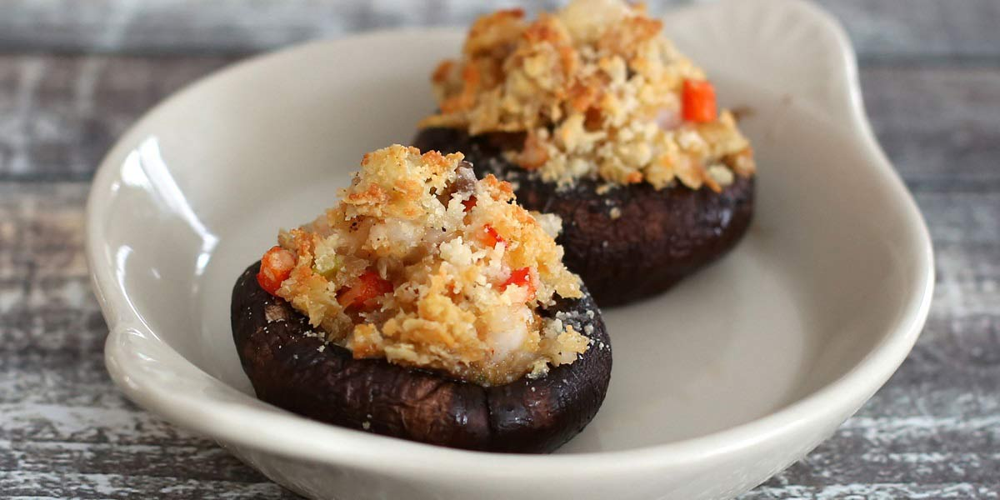

Stuffed Portobello Mushrooms
Recipe Specification
Ingredients List
| Ingredients | Quantity |
|---|---|
| Portobello Mushrooms | 4x1 |
| Vegetable Oil | 40ml |
| Spring Onions | 4 stalks |
| Garlic Cloves | 1 Clove |
| Slide Granary Bread | 3 Slices |
| Parsley | 20g |
| Pumpkin Seeds | 100g |
| Tomatoes | 3x1 |
| Salt & Pepper | To Season |
Yield: 4 portions
Preparation
- Finely slice spring onions.
- Peel and crush garlic cloves.
- Pick and finely chop parsley leaves.
- Dice tomatoes into 1 cm cubes.
- Place diced tomatoes in a bowl and season to taste.
- Place bread in food processor and blend into crumbs.
- Remove stalk from portabella mushroom and finely dice.
- Line a baking tray with greaseproof paper.
- Drizzle mushrooms with oil and season with a pinch of salt and pepper.
- Divide diced tomatoes into 4 and fill the inside of the Portobello mushrooms with it.
- Pre-heat oven to 160’C.
Cooking Instructions
- Place a frying pan over a medium/high heat and add vegetable oil.
- Add spring onions and diced mushroom stalk before sautéing for 3 minutes.
- Add crushed garlic to pan and sauté for 2 minutes before adding breadcrumbs and seasoning mixture to taste.
- Remove pan from heat, divide breadcrumbs into 4 and cover Portobello mushrooms with.
- Cover the baking tray with a loose layer of foil and place in the oven for 10 minutes.
- Remove foil from tray and bake for a further 12 minutes.

Serving Suggestions
This dish goes great with garden peas and a warm cous cous salad.
Storing instructions
Place in an airtight container before placing in the refrigerator. Consume within 4 days of making it.
Reheating Instructions
Place in the microwave for 1-2 minutes.